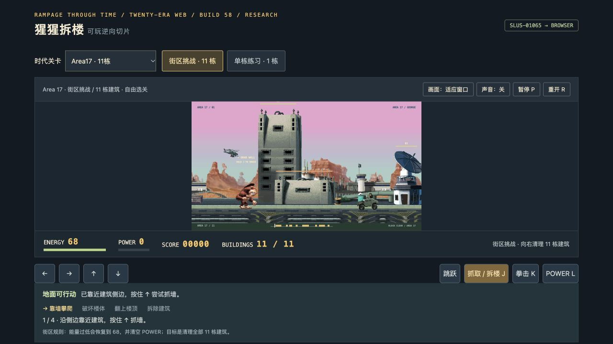

二十个时代代表关 / George · 电脑与手机均可游玩
进入后可从时代列表选择关卡，或选择连续闯关。Old West · Avalon · Area17
Build58 修复地面和飞行敌人在画面左右提前消失的问题，保留原战斗判断。2026-10-27 用户专项复测通过；二十关整体手机验收由用户暂缓。
连续闯关与关卡起点存档为网页功能；存档仅保存在当前浏览器和网址，退出后从当前时代起点继续。运行无需 ROM、BIOS 或后端。
本项目是研究复刻，包含原作提取图像和部分逆向移植逻辑；原作名称与内容权利归相应权利人。不是全部60城市或完整原引擎。Cleito独立游泳、部分原动画及原音乐未恢复，声音为合成音效。
Build58 修复报告（冻结时记录） · 最新验收状态 · 来源与边界
